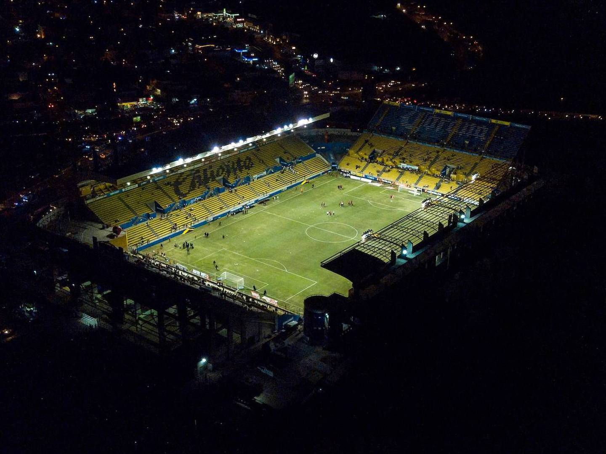
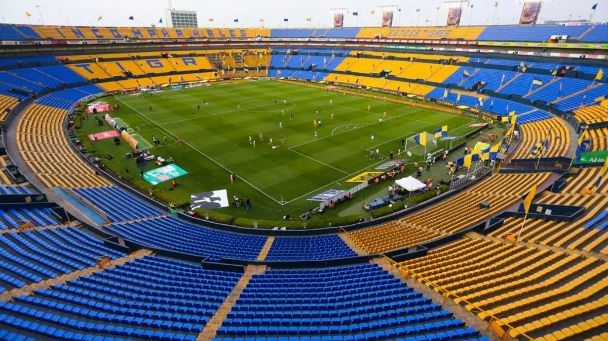

Reglas del Fútbol Soccer
A continuación, en IBITIC SPORT te dejamos una lista de reglas del Fútbol
- Terreno de juego
- El campo de juego será un rectángulo de una longitud mínima de 90 metros y máxima de 120 m y una anchura de 45 a 90 metros. En todos los casos el terreno de juego deberá ser rectangular, divido en dos mitades y estará marcado con líneas. Dichas líneas pertenecerán a las zonas que demarcan.
- El balón
- Esférico
- Tendrá una circunferencia entre 70 a 68 cm.
- Pesará entre 410 y 450 gramos.
- Los jugadores
- Camiseta
- Shorts
- Meidas
- Zapatillas
Los colores del equipamiento de los jugadores debe de ser diferenciado del equipo contrario. La vestimenta del árbitro y asistentes debe de ser distinta al de ambos equipos.
- El árbitro
- Cuida las reglas del juego y tiene facultad de amonestar a los jugadores.
- Tiene facultad de expulsar a un jugador al notar conductas violentas
- Hace cumplir la duración reglamentaria del partido. Puede añadir tiempo según crea conveniente.
- Puede interrumpir o suspender un partido de creerlo necesario.
- Señala el comienzo, reanudación del juego y fin del partido.
- Los árbitros asistentes
- Indican Fueras de juegos
- Cambios de jugadores
- Etc.
- Duración del partido
- Tiene dos tiempos de 45 minutos cada uno. Hay un descanso no mayor de 15 minutos entre cada tiempo.
- Sanciones disciplinarias
Las sanciones disciplinarias involucran infracciones sancionables como amonestación o expulsión y son impuestas mediante el uso de la tarjeta amarilla o roja, respectivamente.
- Conducta antideportiva.
- Rechazar con palabras o acciones las decisiones del árbitro.
- Retrasar la reanudación del juego.
Criterios que tienen que cumplir los estadios de Primera División
Los requisitos de la infraestructura:
El estadio de los equipos que quieran ascender deberá contar con las condiciones básicas para la primera división: terreno de juego con capacidad mínima requerida de 6,000 - 20,000 espectadores, iluminación, vestidores, palcos, servicios sanitarios, médicos y de seguridad, y prensa. Así como campos de entrenamiento y Casa Club.


Copa Mundial de la FIFA™
El torneo más prestigioso del mundo.
En la Copa Mundial Masculina de la FIFA™, que se celebra cada cuatro años, 32 naciones compiten entre sí por el título. Los distintos clasificatorios continentales dan paso a una fase final de lo más emocionante, que congrega a los aficionados en torno a la pasión y el amor por el deporte rey.
- Copa Mundial de la FIFA Uruguay 1930™
- Copa Mundial de la FIFA Italia 1934™
- Copa Mundial de la FIFA Francia 1938™
- Copa Mundial de la FIFA Brasil 1950™
- Copa Mundial de la FIFA Suiza 1954™
Ganador: República Federal de Alemania
- Copa Mundial de la FIFA Suecia 1958™
- Copa Mundial de la FIFA Chile 1962™
- Copa Mundial de la FIFA Inglaterra 1966™
- Copa Mundial de la FIFA México 1970™
- Copa Mundial de la FIFA Alemania 1974™
Ganador: República Federal de Alemania
- Copa Mundial de la FIFA Argentina 1978™
- Copa Mundial de la FIFA España 1982™
- Copa Mundial de la FIFA México 1986™
- Copa Mundial de la FIFA Italia 1990™
Ganador: República Federal de Alemania
- Copa Mundial de la FIFA Estados Unidos 1994™
- Copa Mundial de la FIFA Francia 1998™
- Copa Mundial de la FIFA Japón 2002™
- Copa Mundial de la FIFA Alemania 2006™
- Copa Mundial de la FIFA Sudáfrica 2010™
- Copa Mundial de la FIFA Brasil 2014™
- Copa Mundial de la FIFA Rusia 2018™
- Copa Mundial de la FIFA Catar 2022™
20 nov - 17 dic